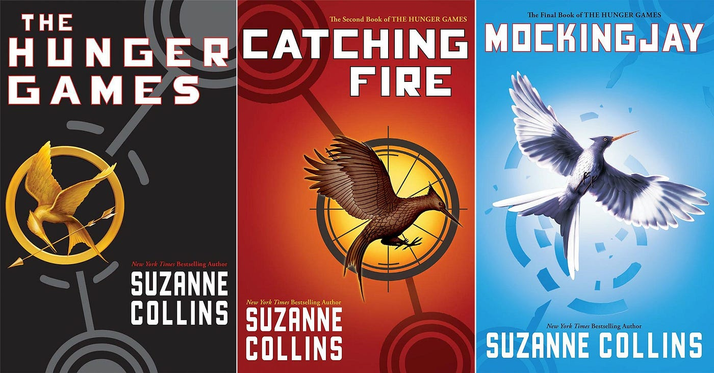
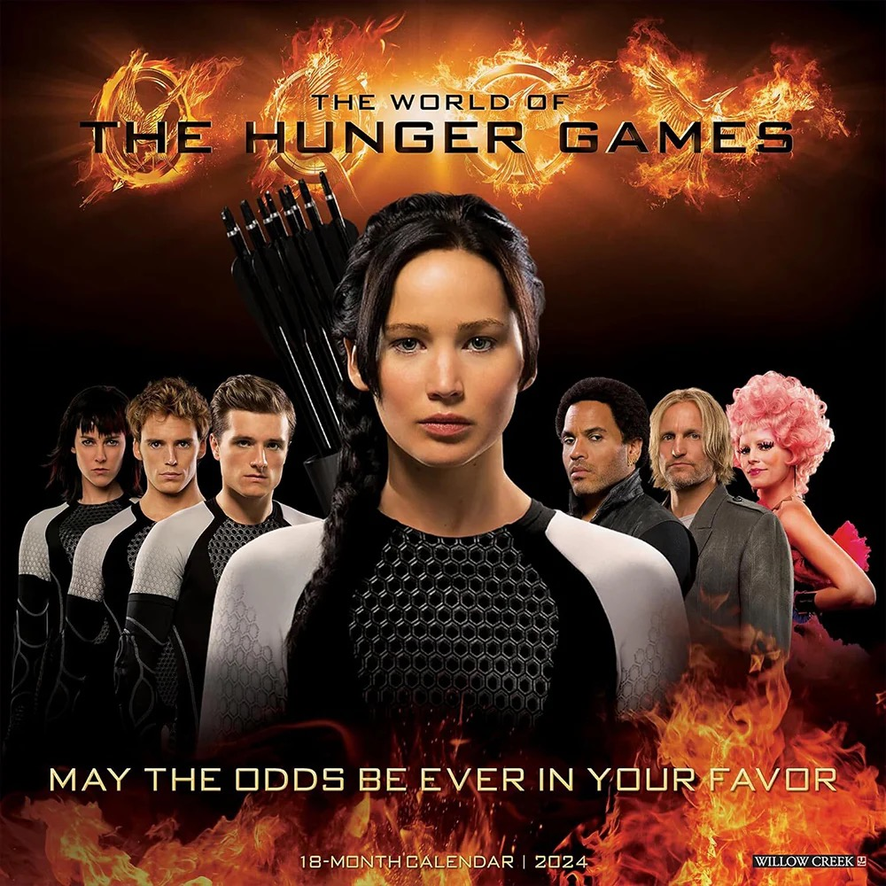

Explore the world of Panem and the captivating journey of Katniss Everdeen in Suzanne Collins' groundbreaking series.
Dive into the world of The Hunger Games — a dystopian series set in the nation of Panem, where the Capitol holds control over the 12 districts. Follow Katniss Everdeen, a young girl from District 12, as she navigates the dangers of the Hunger Games and the revolution that follows.
Beyond the books, the Hunger Games universe has expanded to films, prequels, and more. Explore the films, spin-offs, and interactive content that brings the world of Panem to life.
Join the Revolution!
Get involved in the fandom! From fan theories to discussions on rebellion, explore the Hunger Games community. Share your thoughts, meet fellow fans, and dive deeper into the themes that make the series so impactful.
